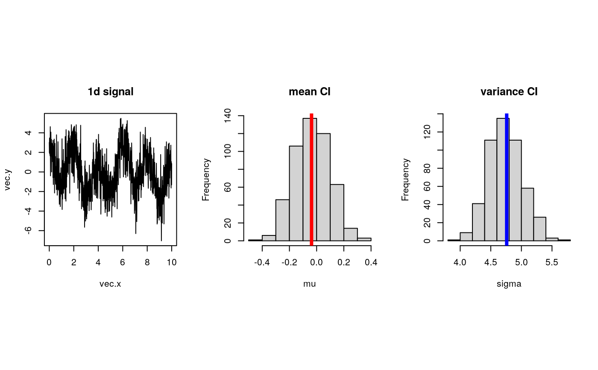

Assuming data being dependent with cardinality N, boot.stationary returns
a vector of index that is used for stationary bootstrapping. To describe, starting points
are drawn from uniform distribution over 1:N and the size of each block is
determined from geometric distribution with parameter \(p\).
boot.stationary(N, p = 0.25)the number of observations.
parameter for geometric distribution with the size of each block.
a vector of length N for moving block bootstrap sampling.
Politis DN, Romano JP (1994). “The Stationary Bootstrap.” Journal of the American Statistical Association, 89(428), 1303. ISSN 01621459.
# \donttest{
## example : bootstrap confidence interval of mean and variances
vec.x = seq(from=0,to=10,length.out=100)
vec.y = sin(1.21*vec.x) + 2*cos(3.14*vec.x) + rnorm(100,sd=1.5)
data.mu = mean(vec.y)
data.var = var(vec.y)
## apply stationary bootstrapping
nreps = 50
vec.mu = rep(0,nreps)
vec.var = rep(0,nreps)
for (i in 1:nreps){
sample.id = boot.stationary(100)
sample.y = vec.y[sample.id]
vec.mu[i] = mean(sample.y)
vec.var[i] = var(sample.y)
print(paste("iteration ",i,"/",nreps," complete.", sep=""))
}
#> [1] "iteration 1/50 complete."
#> [1] "iteration 2/50 complete."
#> [1] "iteration 3/50 complete."
#> [1] "iteration 4/50 complete."
#> [1] "iteration 5/50 complete."
#> [1] "iteration 6/50 complete."
#> [1] "iteration 7/50 complete."
#> [1] "iteration 8/50 complete."
#> [1] "iteration 9/50 complete."
#> [1] "iteration 10/50 complete."
#> [1] "iteration 11/50 complete."
#> [1] "iteration 12/50 complete."
#> [1] "iteration 13/50 complete."
#> [1] "iteration 14/50 complete."
#> [1] "iteration 15/50 complete."
#> [1] "iteration 16/50 complete."
#> [1] "iteration 17/50 complete."
#> [1] "iteration 18/50 complete."
#> [1] "iteration 19/50 complete."
#> [1] "iteration 20/50 complete."
#> [1] "iteration 21/50 complete."
#> [1] "iteration 22/50 complete."
#> [1] "iteration 23/50 complete."
#> [1] "iteration 24/50 complete."
#> [1] "iteration 25/50 complete."
#> [1] "iteration 26/50 complete."
#> [1] "iteration 27/50 complete."
#> [1] "iteration 28/50 complete."
#> [1] "iteration 29/50 complete."
#> [1] "iteration 30/50 complete."
#> [1] "iteration 31/50 complete."
#> [1] "iteration 32/50 complete."
#> [1] "iteration 33/50 complete."
#> [1] "iteration 34/50 complete."
#> [1] "iteration 35/50 complete."
#> [1] "iteration 36/50 complete."
#> [1] "iteration 37/50 complete."
#> [1] "iteration 38/50 complete."
#> [1] "iteration 39/50 complete."
#> [1] "iteration 40/50 complete."
#> [1] "iteration 41/50 complete."
#> [1] "iteration 42/50 complete."
#> [1] "iteration 43/50 complete."
#> [1] "iteration 44/50 complete."
#> [1] "iteration 45/50 complete."
#> [1] "iteration 46/50 complete."
#> [1] "iteration 47/50 complete."
#> [1] "iteration 48/50 complete."
#> [1] "iteration 49/50 complete."
#> [1] "iteration 50/50 complete."
## visualize
opar <- par(no.readonly=TRUE)
par(mfrow=c(1,3), pty="s")
plot(vec.x, vec.y, type="l", main="1d signal") # 1d signal
hist(vec.mu, main="mean CI", xlab="mu") # mean
abline(v=data.mu, col="red", lwd=4)
hist(vec.var, main="variance CI", xlab="sigma") # variance
abline(v=data.var, col="blue", lwd=4)

par(opar)
# }